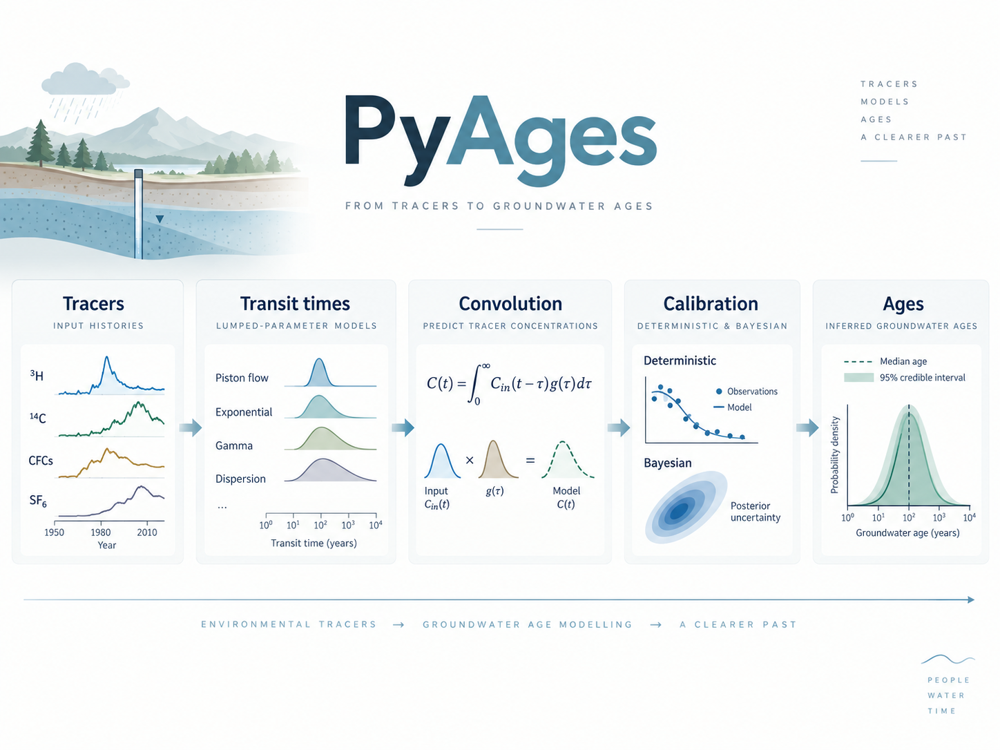

Software
Open-source tools for groundwater modelling, tracer analysis and the interpretation of transit times.
HydroModPy
HydroModPy is a Python toolbox for building, running, calibrating and analysing catchment-scale shallow-groundwater models in a reproducible way.
The workflow automates catchment delineation; the preparation of spatial and temporal data; model parameterisation; MODFLOW simulations; particle tracking and solute transport; and the export and visualisation of results.
A. Gauvain et al. (2026) · EGUsphere [preprint] · manuscript under review at Hydrology and Earth System Sciences.
PyAges
PyAges is an open-source Python environment for modelling and interpreting groundwater ages from environmental tracers and lumped-parameter models (LPMs).
It combines transit-time models, convolution and deterministic or Bayesian calibration methods to estimate parameters, their uncertainties and their identifiability limits.
J.-R. de Dreuzy, S. Leray & J. Marçais (2026) · submitted to Geoscientific Model Development.
